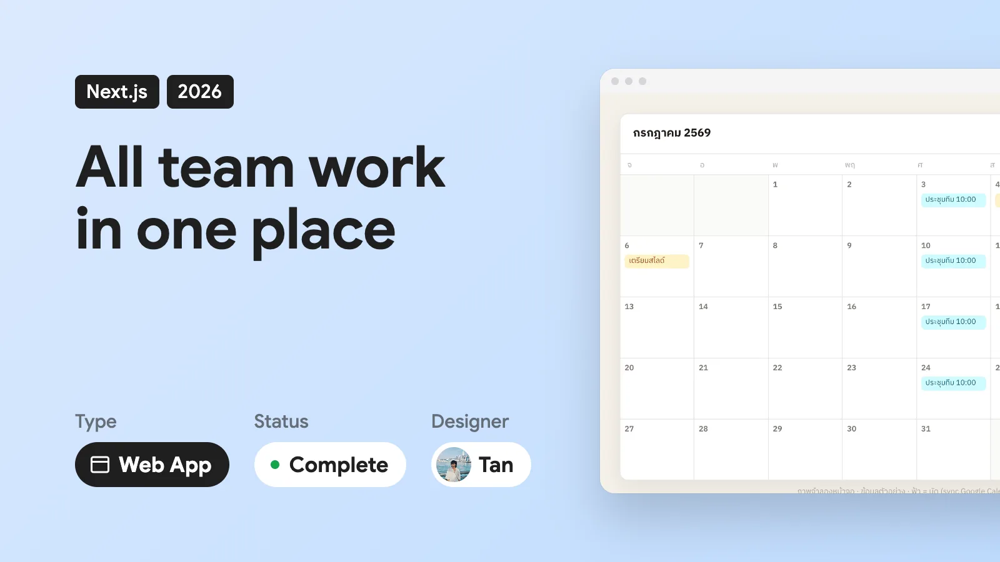
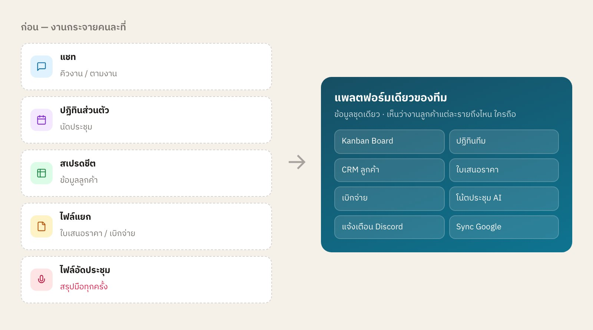
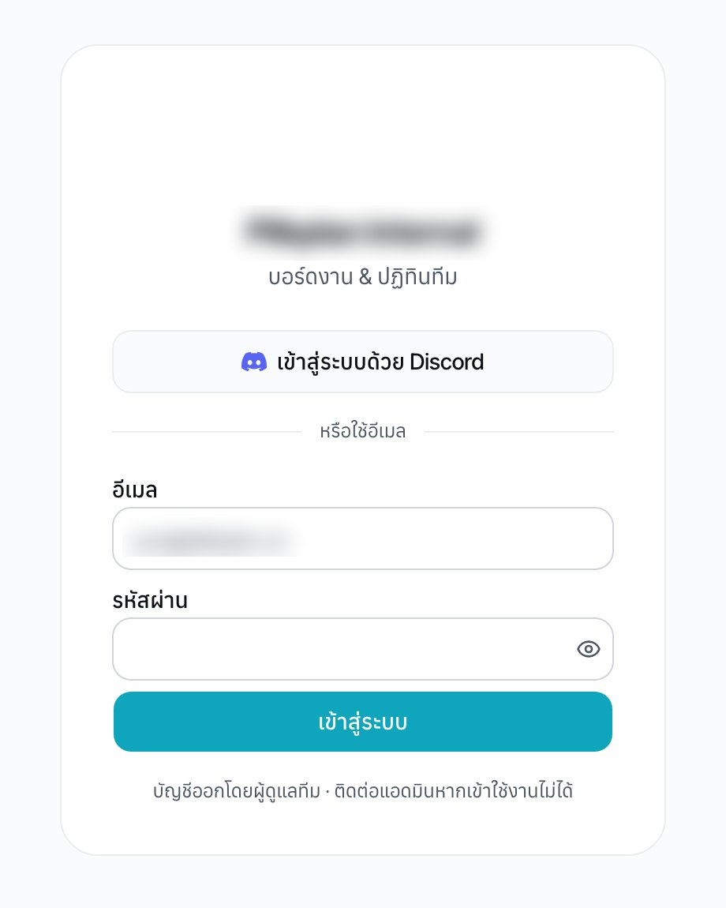
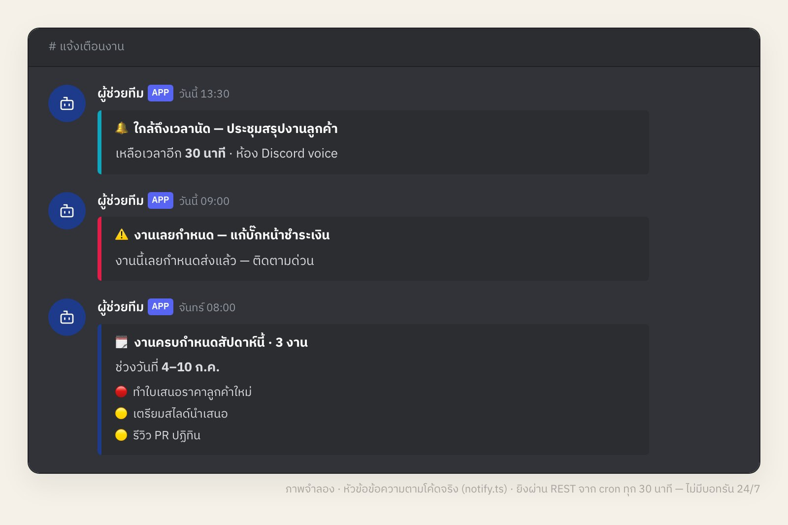
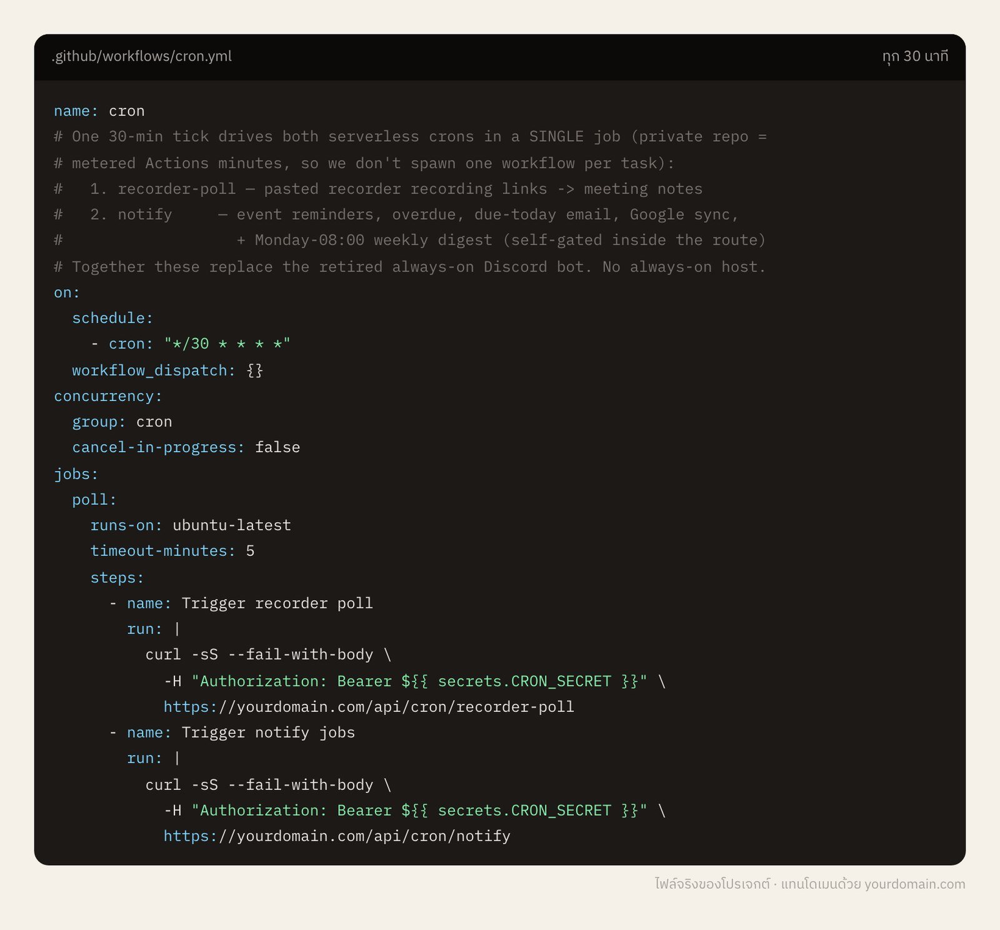
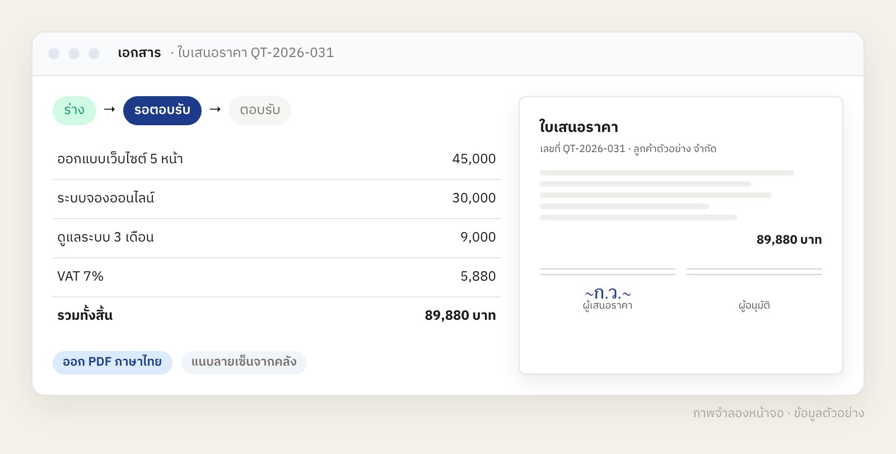
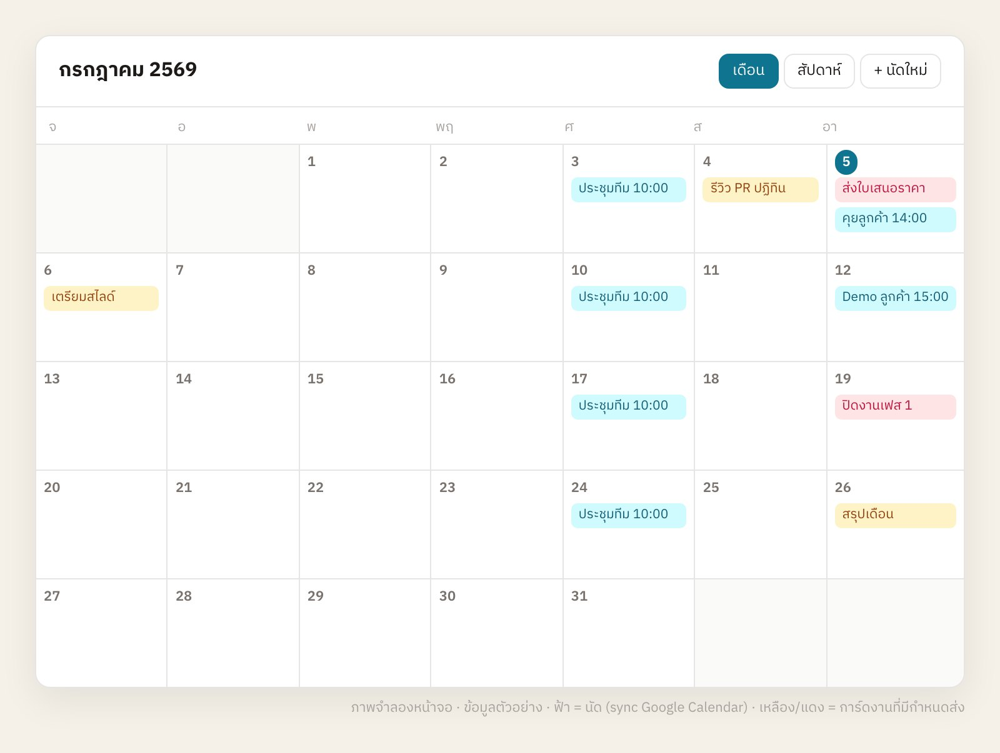
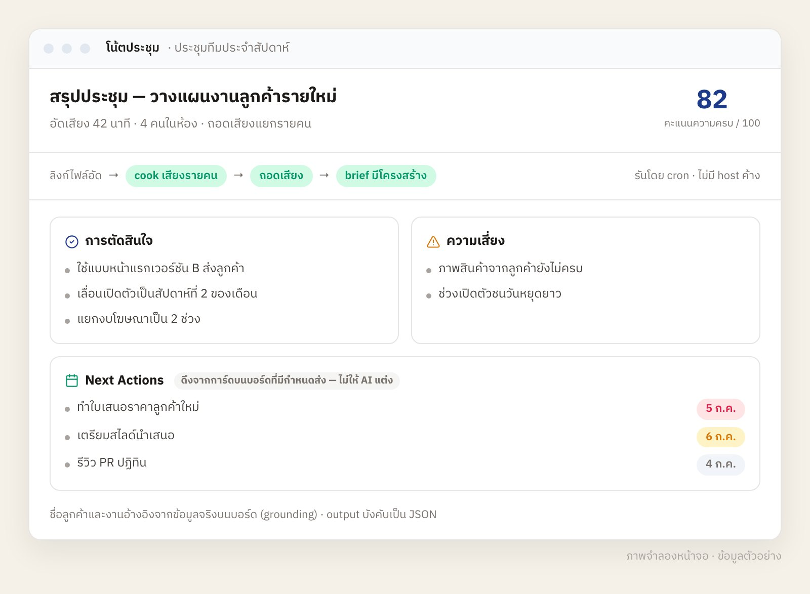
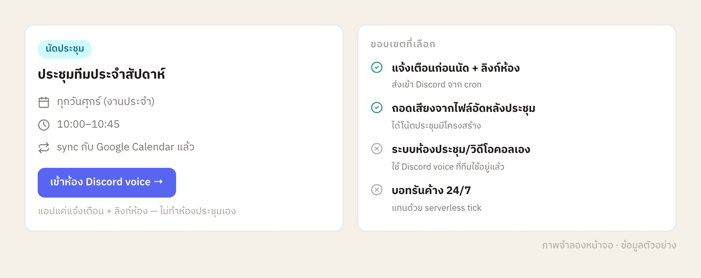
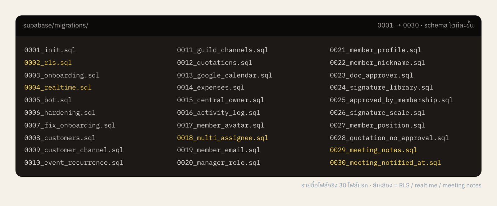

All team work in one place
An internal team platform that puts the board, calendar, CRM, documents and AI meeting notes in one place. Built on Next.js 16 + Supabase, with all automation on serverless cron and no host running 24/7, and multi-tenant from the first migration so it can grow into a product.

An internal tool that puts the team's Kanban board, calendar, client CRM, quotations/expense claims and AI meeting notes in one app. Built on Next.js 16 + Supabase (RLS), with all automation driven by serverless cron — no host running 24/7. Multi-tenant from the first migration so it can grow into a product.
The problem
The team's work was spread across several tools. Why was day-to-day work still messy, with things slipping through?

Team work lived in different places: the task queue was discussed in chat, meetings sat in personal calendars, client data was in a spreadsheet, and every meeting summary was written by hand. There was no single place to see who was doing what and how far along it was, so tasks slipped, were hard to follow up, and got duplicated.
Work spread across tools, no single source of truth
The task board was in chat, meetings in personal calendars, clients in a sheet. To know where one client's work stood, you had to open several places and piece it together.
The reminder bot needed a machine running 24/7
The old task/meeting reminders needed a process running all the time. It cost a host, failed silently without anyone noticing, and was hard to maintain.
Every meeting summary written by hand
The team recorded meetings, but someone had to listen back, transcribe and write up notes. It took a lot of time and the quality varied each time.
Manual quotations and expense claims, no approval flow
Documents were separate files. People chased each other to find out who had approved what, versions got mixed up, and nothing showed clearly which was a draft and which was approved.
We wanted to sell it later, but it would be tied to one company
Building a purely internal tool with no room for multiple organizations would mean rebuilding the whole data model the day we wanted to sell it.
The solution
Put all the work in one place and let automation do the boring parts, without keeping a server running all the time.

All work on one platform
Board, calendar, client CRM, documents and meeting notes share one data set. One page shows where each client's work stands and who owns it.
Drop the 24/7 host for serverless cron
GitHub Actions calls /api/cron/* on Vercel every 30 minutes. Reminders and notifications run as stateless ticks: no process sitting in RAM, no machine to keep alive.
Automatic meeting-notes pipeline
Paste a meeting recording link → the system cooks per-speaker audio → transcribes → summarizes into a structured brief (decisions / action items / risks) + a completeness score
Documents with a real approval flow
Quotations and expense claims move through draft → pending → approved/rejected based on user role, with Thai-language PDF export and a signature library.
Multi-tenant from the first migration
Every table has org_id + Row Level Security, keeping organizations apart from day one. v1 runs for one company but can become a product for clients without a rebuild.
How it works — 4 steps
The core of the architecture: no host running 24/7. Every automation is driven by a stateless cron tick.

The team works on the platform
Drag cards on the board, schedule meetings in the calendar, paste meeting recording links
Cron tick every 30 minutes
GitHub Actions calls /api/cron/* on Vercel, with no host left running
Batch processing
Remind about due and overdue tasks, sync Google, cook + transcribe meeting audio
Automatic delivery
Discord/email notifications + a weekly overview every Monday morning
Tech Stack & Architecture
Bun monorepo · Next.js 16 on Vercel · Supabase — no backend of its own, no machine running all the time

Next.js 16 (App Router) + Server Actions — server-side mutations written directly, no hand-built REST · Supabase + RLS gives auth, realtime and row-level security out of the box, enforcing multi-tenancy at the database layer · Bun workspaces monorepo — packages/shared is the single source of domain vocabulary + query builders, shared by the web app and cron · Serverless cron (GitHub Actions → Vercel) instead of a bot running 24/7: stateless, no machine to keep alive
What I built — 8 core features
The full loop of running team work, from the task queue to documents and meeting notes

Kanban Board
Drag-and-drop queue in 5 columns + realtime sync + priority (high/medium/low) + multiple assignees per card
Team calendar
Month/week views + recurring events + a Discord room link on each meeting
Client CRM
Status as prospect/active/paused, companies vs. individuals + a Discord channel per client
Quotations
Status flow draft→awaiting reply→accepted + Thai-language PDF + a signature library for the footer
Expense claims
Expense categories + automatic withholding-tax rates + role-based approval flow
AI meeting notes
Recording link → per-speaker transcript → structured brief (decisions / action items / risks) + completeness score
Serverless notifications
Discord/email reminders for due & overdue tasks + a weekly overview, driven by cron with no host
Sync Google Calendar
Two-way OAuth sync, in-app meetings ↔ Google + an activity log of every change + a "What's new" changelog
The board
The whole team's queue on one screen. Drag cards across columns and everyone sees the update live.

Hacks
6 engineering problems I had to work out myself: serverless constraints, undocumented APIs and multi-tenancy

Kill the bot that runs 24/7
The old reminder system needed a process running constantly. It cost a host and failed silently. I wanted automation with no machine to keep alive.
Transcribe meetings from a recording link with no public API
The recordings live on an external service with no official API, and a serverless function can't install ffmpeg or do heavy audio processing.
fflate. No ffmpeg needed, so it runs on serverless.Stop the AI from inventing client names and conclusions
Given a raw meeting, the LLM guessed client and project names that don't exist. The summary read well but couldn't be trusted.
Dragging cards must not stutter or collide
Several people use the board at once. Waiting for a round-trip before a card moves feels laggy, and two people moving cards at the same time breaks the order.
Post to Discord from serverless without a gateway
discord.js normally needs an open gateway (a long-lived websocket), which clashes with serverless functions that shut down when they finish
POST /channels/:id/messages) with no discord.js at all, so it runs easily from cron + designed to fail soft (log, don't throw), so one broken channel doesn't take down the batchAn internal tool ready to become a product
Tying it to one company would mean rebuilding the data model to sell it later, but full multi-tenancy from the start would be over-engineering for v1.
org_id + Row Level Security to every table from the early migrations (v1 runs one org). The schema grows incrementally over dozens of migration files, not in one big bang, so it can expand to many organizations without a rebuild.Deliberate design decisions
Choosing what "not to build" keeps the tool small, focused and easy to maintain

The team platform deliberately doesn't try to do everything: no built-in meeting room (Discord voice handles it; the app only notifies and links), no host running 24/7 (fully serverless), and no new design system (reused from the team's Hub). A tight scope made it straightforward to build and easy to maintain.
No built-in meeting room
Meetings run on Discord voice; the app only notifies and links
No host running 24/7
All automation is serverless cron, no machine to keep alive
No new design system
Reuses tokens, fonts and components from the team's Hub
v1 runs one org
but the multi-tenant structure can expand without a rebuild
What I got better at
5 areas where this project genuinely moved my skills up

I redesigned automation that used to need a 24/7 bot into stateless cron ticks: several tasks in one job to save Actions minutes, and time-window self-gating with timezone arithmetic (Thailand = a fixed UTC+7). Lesson: most work that "has to run all the time" really only needs to "run on a beat".
org_id + Row Level Security on every table from the start, so organizations are separated at the DB level, not just in the application, with the schema evolving incrementally over dozens of migrations. Lesson: deciding tenancy at the first row of the schema is far cheaper than rebuilding later.
Enforced structured JSON output, grounded the prompt in real data (board/clients) to stop hallucination, separated the "facts" (rolled up from cards) from the parts the AI summarizes, and built an explainable score that shows where the number comes from. Lesson: reliable AI comes from narrowing its scope, not from giving it free rein.
Worked out the undocumented endpoints of the recording service by inspecting its download page, handled zips in memory with fflate instead of ffmpeg (which can't be installed on serverless), and posted to Discord over plain REST instead of a gateway. Lesson: runtime limits often push you to a lighter, more direct solution.
Bun workspaces split apps/web from packages/shared, which holds the domain vocabulary, query builders and business logic used by both the web app and cron. Every label, status and color comes from one place, never hard-coded twice. Lesson: code that must "always match" has to live in one place, not be copied around.